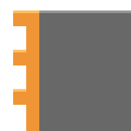
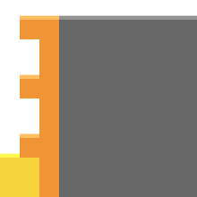

The Infinite O Spin Double, aka Infinite OSD, or OST(not o spin triple, wtf is that). Is a looping pattern to create O Spin Double, follows with Tetris.
The L/J piece is required to be stack on top of each others on the side of the board.
OSD can be executed in the O shaped hole on the side. You can speed up this process using Shake O Spin method. O pieces must be kicked to the bottom to avoid creating unkickable holes.
If you executed more than 4 OSD. You can go for a Tetris when I piece is available.